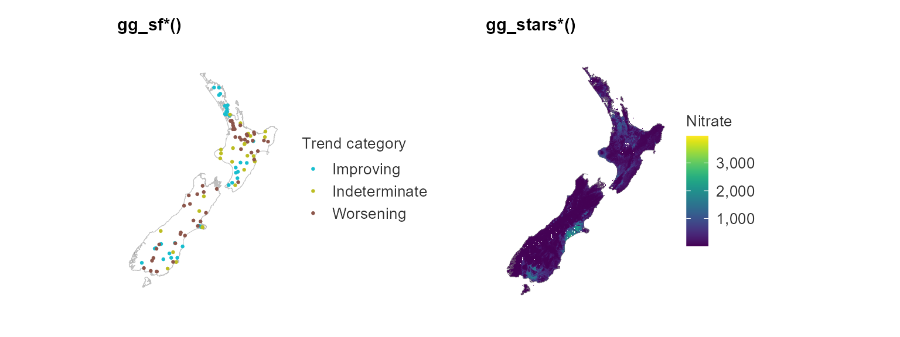

Making simplevis ggplot graphs
simplevis provides the following types of ggplot graph:
- horizontal bar (e.g.
gglot_hbar) - vertical bar (e.g.
gglot_vbar) - line plot (e.g.
gglot_line) - scatter plot (e.g.
gglot_scatter) - boxplot (e.g.
gglot_box)
For each graph type 4 functions are available.
- A
ggplotnot coloured or faceted (e.g.gglot_hbar)
plot_data <- ggplot2::diamonds %>%
mutate(cut = stringr::str_to_sentence(cut)) %>%
group_by(cut) %>%
summarise(average_price = mean(price)) %>%
ungroup() %>%
mutate(average_price_thousands = round(average_price / 1000, 1)) %>%
mutate(cut = factor(cut, levels = c("Fair", "Good", "Very good", "Premium", "Ideal")))
plot <- ggplot_hbar(data = plot_data,
x_var = average_price_thousands,
y_var = cut,
title = "Average diamond price by cut",
x_title = "Average price ($US thousands)",
y_title = "Cut")
plot 
- A
ggplotcoloured, but not faceted (e.g.gglot_hbar_col)
plot_data <- ggplot2::diamonds %>%
mutate(cut = stringr::str_to_sentence(cut)) %>%
group_by(cut, clarity) %>%
summarise(average_price = mean(price)) %>%
mutate(average_price_thousands = round(average_price / 1000, 1)) %>%
ungroup()
plot <- ggplot_hbar_col(data = plot_data,
x_var = average_price_thousands,
y_var = cut,
col_var = clarity,
legend_ncol = 4)
plot
- A
ggplotfacetted, but not coloured (e.g.gglot_hbar_facet)
plot_data <- ggplot2::diamonds %>%
mutate(cut = stringr::str_to_sentence(cut)) %>%
group_by(cut, clarity) %>%
summarise(average_price = mean(price)) %>%
mutate(average_price_thousands = round(average_price / 1000, 1)) %>%
ungroup()
plot <- ggplot_hbar_facet(data = plot_data,
x_var = average_price_thousands,
y_var = cut,
facet_var = clarity)
plot
- A
ggplotcoloured and facetted (e.g.gglot_hbar_col_facet)
plot_data <- ggplot2::diamonds %>%
mutate(cut = stringr::str_to_sentence(cut)) %>%
group_by(cut, clarity, color) %>%
summarise(average_price = mean(price)) %>%
mutate(average_price_thousands = round(average_price / 1000, 1)) %>%
ungroup()
plot <- ggplot_hbar_col_facet(data = plot_data,
x_var = average_price_thousands,
y_var = color,
col_var = clarity,
facet_var = cut,
legend_ncol = 4)
plot
These ggplot graphs have been designed that users can convert them easily to html interactive objects by wrapping them in plotly::gglotly with the tooltip = "text" specification. This results in the tooltip converting the applicable variable name to sentence case and replacing underscores with spaces.
plot_data <- storms %>%
group_by(year) %>%
summarise(average_wind = round(mean(wind), 2)) %>%
ungroup()
plot <- ggplot_vbar(data = plot_data,
x_var = year,
y_var = average_wind,
title = "Average wind speed of Atlantic storms, 1975\u20132015",
x_title = "Year",
y_title = "Average maximum sustained wind speed (knots)")
plotly::ggplotly(plot, tooltip = "text") %>%
plotly::config(displayModeBar = F)Making simplevis ggplot maps
simplevis provides the following types of ggplot map:
- simple feature (
sf) maps - spatial-temporal array (i.e.
stars) maps
Simple feature (sf) maps are maps of points, lines or polygons.
The following functions are available:
ggplot_sfggplot_sf_colggplot_sf_facetggplot_sf_col_facet
These functions work in the same way as the ggplot graph functions, but with the following key differences:
- Data must be provided in the format of an
sfobject. - Data must be of
POINT/MULTIPOINT,LINESTRING/MULTILINESTRING, orPOLYGON/MULTIPOLYGONgeometry types - Data can have any coordinate reference system (CRS), but it must be defined
- No
x_varandy_varvariables are required - There is a coastline specification, which allows for a further
sfobject as a coastline or administrative boundaries to be added to the map. A New Zealand coastline (nz) and New Zealand coastline with regional boundaries (nz_region) has been provided with the package. - They do not support conversion to interactive objects through
plotly::gglotly.
map_data <- example_sf_nz_river_wq %>%
dplyr::filter(period == "1998-2017", indicator == "Nitrate-nitrogen")
ggplot_sf(data = map_data,
coastline = nz,
size = 0.25)
map_data <- example_sf_nz_river_wq %>%
filter(period == "1998-2017", indicator == "Nitrate-nitrogen")
ggplot_sf_col(data = map_data,
col_var = trend_category,
coastline = nz,
size = 0.25,
pal = pal_trend3,
title = "Monitored river nitrate-nitrogen trends, 2008\u201317")
map_data <- example_sf_nz_river_wq %>%
filter(period == "1998-2017", indicator == "Nitrate-nitrogen")
ggplot_sf_facet(data = map_data,
facet_var = trend_category,
coastline = nz,
size = 0.25,
title = "Monitored river nitrate-nitrogen trends, 2008\u201317")
map_data <- example_sf_nz_river_wq %>%
filter(period == "1998-2017", indicator %in% c("Nitrate-nitrogen", "Dissolved reactive phosphorus"))
ggplot_sf_col_facet(data = map_data,
col_var = trend_category,
facet_var = indicator,
coastline = nz,
size = 0.25,
pal = pal_trend3,
title = "Monitored river nitrate-nitrogen trends, 2008\u201317")
simplevis provides ggplot maps made for spatial temporal arrays (stars).
The following functions are available:
ggplot_sf_colggplot_sf_col_facet
These functions work in the same way as the ggplot sf map functions, but with the following key differences:
- No non-colouring functions have been made, as it is assumed that this functionality is not required
- They do not support conversion to interactive objects through
plotly::gglotly. - Data must be provided in the format of a
starsobject. For,ggplot_sf_col, thestarsobject must have 2 dimensions x and y, and only 1 attribute layer. Required input. For,ggplot_sf_col_facet, the stars object must have 2 dimensions, x and y, and multiple named attribute layers with the usual convention of lower case and underscores. Useselect,slice,candsplitto get thestarsobject into the appropriate format.
ggplot_stars_col(data = example_stars_nz_no3n,
coastline = nz,
col_method = "quantile",
title = "River modelled median nitrate-nitrogen concentrations, 2013\u201317",
legend_digits = 1)
map_data1 <- example_stars_nz_no3n %>%
rlang::set_names("Nitrate nitrogen")
map_data2 <- example_stars_nz_drp %>%
rlang::set_names("Dissolved reactive phosphorus")
map_data <- c(map_data1, map_data2)
ggplot_stars_col_facet(data = map_data,
coastline = nz,
title = "River modelled nutrient concentrations, 2013\u201317")
Making simplevis leaflet maps
simplevis provides the following types of leaflet map:
- simple feature (
sf) maps - spatial-temporal array (i.e.
stars) maps
These work in the same way as the ggplot map functions, but with no coastline arguments.
Outputs are hidden to keep the size of the vignette manageable.
Working with quoted variable inputs
simplevis can also work with quoted variable inputs. The user must place each quoted variable within a simplevis function within a !!sym function, as per the example below. This can be helpful, particularly when working in shiny apps.
plot_data <- ggplot2::diamonds %>%
mutate_at(vars("cut"), ~stringr::str_to_sentence(.)) %>%
group_by_at(vars("cut")) %>%
summarise_at(vars("price"), ~mean(.)) %>%
ungroup() %>%
mutate_at(vars("price"), ~round(. / 1000, 2)) %>%
mutate_at(vars("cut"), ~factor(., levels = c("Fair", "Good", "Very good", "Premium", "Ideal")))
x_var <- "price"
y_var <- "cut"
plot <- ggplot_hbar(data = plot_data,
x_var = !!sym(x_var),
y_var = !!sym(y_var),
title = "Average diamond price by cut",
x_title = "Average price ($US thousands)",
y_title = "Cut")
plot 
Making shiny apps with simplevis
simplevis provides three template shiny apps and three example apps showing how to apply each of these templates. Templates are called template1, template2 and template3, and examples showing application of each of these called example1, example2 and example3. Users can access these functions by using the run_template and run_example functions for the applicable app, and then clicking on the download_code button to access a zip file of the code. It is intended that users download the applicable template and example, and refer to both to understand how the code works.
run_template("template1") # a graph and table
run_template("template2") # a leaflet map, as well as graph and table
run_template("template3") # a dual leaflet map, as well as graph and table
run_example("example1") # example application of template1
run_example("example2") # example application of template2
run_example("example3") # example application of template3For a simple graph app, the basic method to create an app is:
- run
run_template("template1")and download the code to use as a template - run
run_example("example1")and download the code to use as a reference - In
datasubfolder, add your data - In
global.R, read your data in - In
ui.R, add a app title - In
ui.R. addradioButtonsand other widgets - In
server.R, add code within reactive plot_data - In
server.R, add code within reactive plot (Note: ensure you have isMobile = input$isMobile within anysimplevisggplotfunctions, and that the font size is appropriate for both desktop and mobile. There is defaults that work well in the server.R, but yoursimplevisggplotfunction will have to include the argumentsfont_size_title = font_size_titleandfont_size_body = font_size_body) - In
server.R, check the table is referring to your right dataset, with intended columns to display - In
server.R, check download code is referring to your dataset. If there are many files, use the download zip code and add a file called download.zip to your data subfolder - In
ui.R, check that the heights of graphs for desktop and mobile are appropriate. (Note: you will need to publish the app and check on your phone before confident that the height for the graph on a mobile device is appropriate) - In
www/About.Rmd, update as necessary - If using google tag-manager, obtain a tag and replace
GTM-XXXXXXXwith it in thewww/js/tag-manager-jsfile.
Mobile compliance - ggplotly for desktop and ggplot for mobile
The template apps have a function with javascript in it that provides a TRUE or FALSE values if the user is on a mobile device. This can value can be referred to in the server code as input$isMobile. This is using the method developed by Gervasio Marchand.
The simplevis ggplot functions have a isMobile specification with values of TRUE or FALSE for whether the user is on a mobile device or not. When isMobile equals TRUE, titles, legend elements, and facets are wrapped accordingly for the smaller screen size. Therefore, when simplevis ggplot functions are used within shiny, the app developer must specify isMobile = input$isMobile within the simplevis ggplot function.
ggplotly has a bug that it is currently not able to convert a ggplot object with a legend on the bottom to html. This causes ggplotly graphs not to be able to display well currently on a mobile. It is possible to add the legend in manually with a plotly argument to the ggplotly object. However, this causes positioning issues between the x axis title and the legend, with the two often overlapping.
As such, the safest option to ensuring that a graph diplays well on a mobile device is to render it as a ggplot object. However, given that there is sufficient space on a desktop device for a legend to be on the side, the approach currently used is to render a ggplotly interactive object for desktop users and a ggplot object for mobile users.
Iframing
Iframing apps can provide a great experience for users.
Template apps are build to be compatible with one of two approaches to iframing:
- if your website has ability for height responsive iframes, then follow the instructions described in the method developed by Paul Campbell.
- if your website does not support responsive iframes, then templates apps have css that supports a iframe of 750px for desktop users, and mobile users can be provided a hyperlink to the app url. The plot and leaflet maximum height of 670px works to fit a 750px iframe.